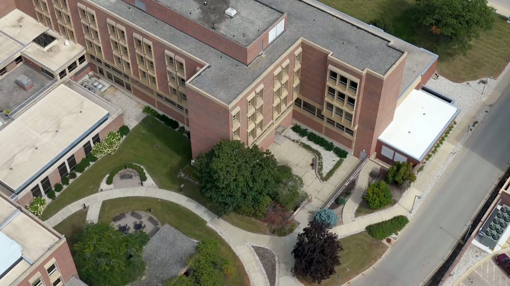

Scalability and sustainability
Repurposing is more than renovation. It means reimagining the infrastructure to serve new missions for every member of the Rockford community for years to come.
Transforming what it is now into what it can be. A community-led network to bring needed resources and services to the Rockford, Illinois community.

The project is led by J. Cooper Jr. LLC (JCJ), a coalition of development consultants that identifies and secures the developers, contractors, investors, financing, and partners a project like this needs. The work is organized as a community-led network, so the people of Rockford shape what the campus becomes.
Damon joined JCJ's transition team in January 2026. His part is workforce development: making sure the repurposed campus produces training, employment services, and real jobs for the people who live around it, supported by JCJ's TECI2 platform (Talent and Employment Connections through Innovation).
Find the needs, the assets, and the key relationships.
Bring the right people and organizations to the table.
Work as one network toward a shared plan.
Design solutions the old model never considered.
Repurposing is more than renovation. It means reimagining the infrastructure to serve new missions for every member of the Rockford community for years to come.
Contributors receive a return on their investment and a service dividend: free access to wellness services, information and training, employment services, and healthy food.
Community investment programs are joined by other investment sources, fundraising, and revenue so the project keeps funding itself.
Churches, houses of worship, businesses, organizations, and residents are all invited. Register for the webinar, share your ideas, or ask to be kept up to date. Registration is handled on the J. Cooper Jr. LLC website.
Workforce development is how a community turns a closed building into careers. If your organization wants to help in Rockford, or has a similar site elsewhere, he would like to hear from you.